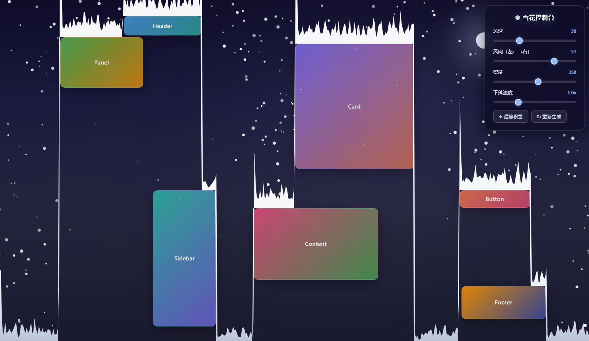
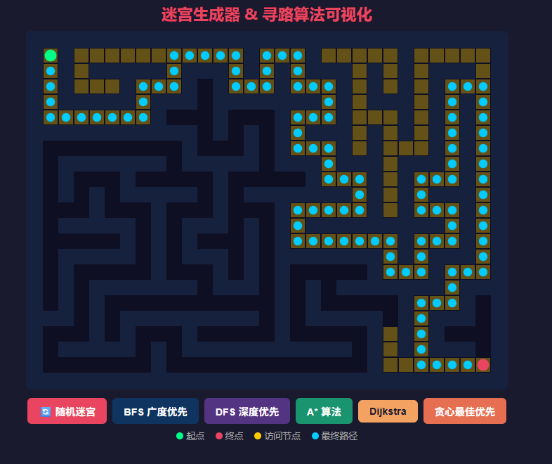
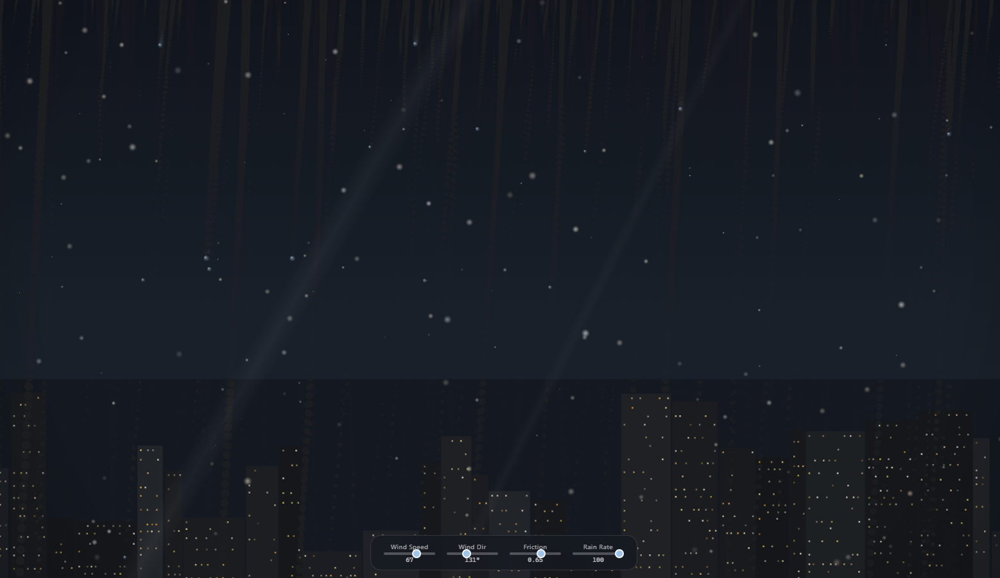
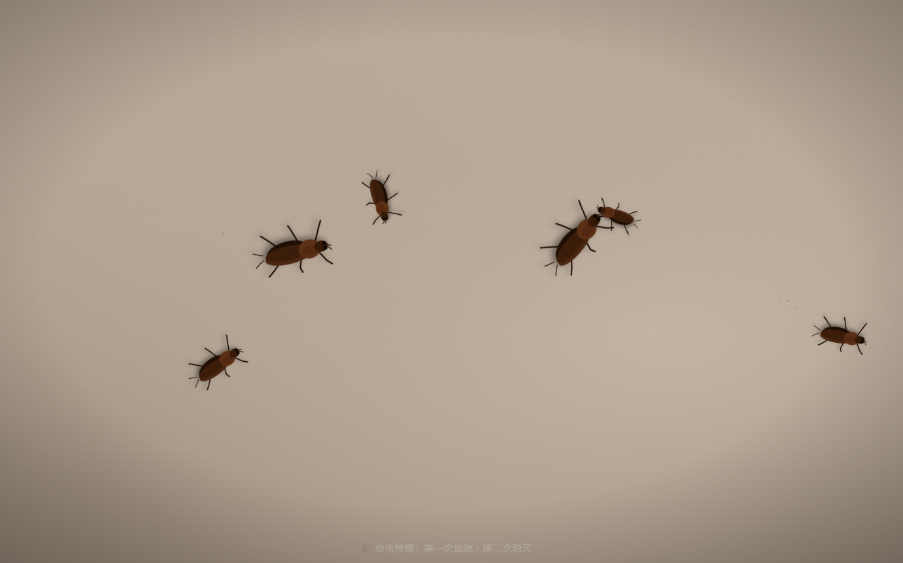
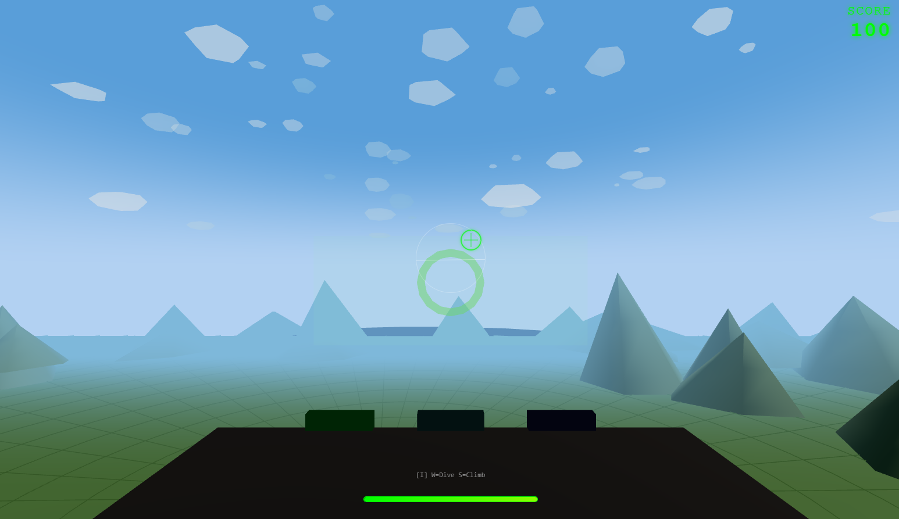
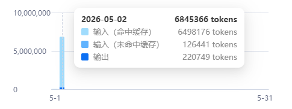
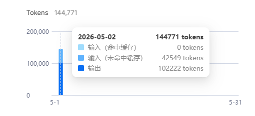
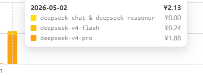

单文件 HTML 测试合集
使用 DeepSeek 官方 API 进行测试。第一个测试使用 OpenCode + high 推理等级，后续全部切换为 Claude Code + max 推理等级。

随机生成雪花从天空飘落，支持风速、风向、密度调节。雪花会在页面元素和底部渐进堆积。

随机迷宫生成，内置多种寻路算法可视化（DFS / BFS / A* / Dijkstra），一键切换自动寻路。

雨滴打在玻璃窗上的物理模拟。雨滴受重力滑落、相遇融合加速。可调节风速、风向、摩擦力。

蟑螂在屏幕上随机移动。第一次点击加速，第二次点击爆炸消灭。含待机动画和粒子特效。
现代风格的 DeepSeek 品牌介绍页面。玻璃材质、视差效果、鼠标驱动的粒子背景、滚动动画。

第一人称 3D 空战游戏。W/S 俯仰、A/D 滚转、鼠标瞄准射击。敌机生成、得分系统、HUD 界面。


